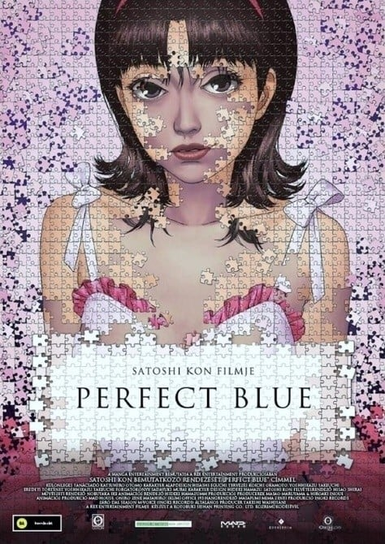

今敏动画电影 工作室与人物
今敏动画电影对照蓝色恐惧、千年女优、红辣椒，适合查今敏代表作和烧脑动画。本片单共收录4部作品，包括蓝色恐惧、千年女优、红辣椒、东京教父等。可按评分、季度和观看顺序对照，适合查今敏、红辣椒、千年女优。
#1蓝色恐惧

8.7「蓝色恐惧」（1998）是一部剧场版，由今敏执导，制作MADHOUSE，类型包括惊悚、悬疑、剧情，评分8.7，在本站出现在7份片单中，例如高分日漫推荐、高分动画剧场版推荐、高分悬疑推理动漫。页面只做片单对照，不提供播放。雾越未麻是流行音乐偶像团体“CHAM!”中的成员之一，但是在公司的决策下，她开始转型为演员。但她却感觉内心有个声音在拒绝自己的选择，而未麻的一些歌迷也反对这个决定。随着越来越多电视剧的演出，未麻却觉得自己的头脑越来越奇怪，仿佛有“另一个自己。
#2千年女优
 8.7
8.7「千年女优」（2002）是一部剧场版，由今敏执导，制作MADHOUSE，类型包括历史、恋爱、爱情，评分8.7，在本站出现在8份片单中，例如高分日漫推荐、高分动画剧场版推荐、高分恋爱动漫推荐。页面只做片单对照，不提供播放。风靡日本的女明星藤原千代子，三十年前当红之际，突然从银幕消声匿迹。 三十年后，千代子的影迷费尽千辛万苦，终于在人烟稀少的寂静山庄中，找到了隐居数十年的她，并献上了一把千代子当年不慎遗失的神秘钥匙。 神秘钥匙宛若开启了记忆之门，引领千代子划入。
#3红辣椒
 8.5
8.5「红辣椒」（2006）是一部剧场版，由今敏执导，制作MADHOUSE，类型包括科幻、悬疑、奇幻，评分8.5，在本站出现在9份片单中，例如高分日漫推荐、高分动画剧场版推荐、高分科幻动漫推荐。页面只做片单对照，不提供播放。29岁的千叶敦子博士是一个非常有魅力的美女，同时她还是一位谦逊有礼的精神治疗医师，专门研究这项领域中的一些边缘学科。最近，她所在的实验室发明了一种名叫PT的全新心理疾病治疗方法，通过一种非常厉害的装置“DC-MINI”，从梦境中寻找隐藏在患。
#4东京教父
 8.3
8.3「东京教父」（2003）是一部剧场版，由今敏执导，制作MADHOUSE，类型包括治愈、搞笑、剧情，评分8.3，在本站出现在9份片单中，例如高分日漫推荐、高分动画剧场版推荐、高分治愈系动漫推荐。页面只做片单对照，不提供播放。中年流浪汉金、虽身为男人但内心温柔又充满母性的阿花和离家出走少女美雪，他们三人过着无家可归的生活，一起居住在东京原宿的一个角落。 圣诞夜，三人在垃圾堆中发现一个哭泣的弃婴，在孩子的襁褓里，发现了一个酒吧的名片和照片，还有奶粉。阿花非常想要小。